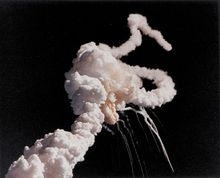

同义词
挑战者（美国航天飞机）一般指挑战者号航天飞机
 遇难宇航员
1982年6月30日 - 在棕榈谷驶出棚厂，正式亮相
遇难宇航员
1982年6月30日 - 在棕榈谷驶出棚厂，正式亮相
 七位航天英雄纪念碑
机长：弗朗西斯·斯科比，46岁；驾驶员：迈克·史密斯，40岁宇航员：朱蒂丝·雷斯尼克（女），36岁；罗纳德·麦克奈尔，35岁；埃里森·奥尼佐卡，39岁；格里高利·杰维斯，41岁；教师克里斯塔·麦考利芙(女)，37岁，
宇航员罗纳德·麦克奈尔（Ronald McNair），来自加利福尼亚州的南部，在棉田的劳动中锤炼了他坚毅的性格他梦想着到外层空间站去生活，在失重的太空中做试验：吹奏萨克斯管。
七位航天英雄纪念碑
机长：弗朗西斯·斯科比，46岁；驾驶员：迈克·史密斯，40岁宇航员：朱蒂丝·雷斯尼克（女），36岁；罗纳德·麦克奈尔，35岁；埃里森·奥尼佐卡，39岁；格里高利·杰维斯，41岁；教师克里斯塔·麦考利芙(女)，37岁，
宇航员罗纳德·麦克奈尔（Ronald McNair），来自加利福尼亚州的南部，在棉田的劳动中锤炼了他坚毅的性格他梦想着到外层空间站去生活，在失重的太空中做试验：吹奏萨克斯管。
 解读词条背后的知识
解读词条背后的知识
科学百科航空航天分类
，
航空航天
，
科技产品
，
科学
- 中文名
- “挑战者”号航天飞机
- 外文名
- HMS Challenger
- 首航日期
- 1983年4月4日
- 失事日期
- 1986年1月28日
- 所属国家
- 美利坚合众国
挑战者号航天飞机命名来源
编辑

“挑战者”号在空中解体
美国的航天飞机都是以早期的研究船名作为命名，因此挑战者号的命名由来也不例外，自1870年航行于大西洋与太平洋上的英国海军研究船挑战者号（HMS Challenger），除此之外，“挑战者”这名字，也曾经被拿来命名阿波罗17号（Apollo 17）的登月模组。挑战者号航天飞机历程
编辑STA-099
1972年7月26日 - 签约
1976年6月14日 - 开始后段机身的结构组装
1977年9月30日 - 开始最后组装
1978年2月10日 - 完成最后组装
1978年2月14日 - 在棕榈谷驶出棚厂，正式亮相
OV-099
1979年1月5日 - 签约
1979年1月28日 - 开始乘客舱模组的结构组装
1980年11月3日 - 开始最后组装
1981年10月23日 - 完成最后组装
遇难宇航员
1982年7月1日 - 以陆运方式将航天飞机自棕榈谷送至爱得华
1982年7月5日 - 空运至肯尼迪太空中心（Kennedy Space Center，KSC）
1982年12月19日 - 进行飞行准备点火
1983年4月4日 - 首次飞行（STS-6）
挑战者号航天飞机研究工程
编辑航天飞机本身虽然是一种需要承受极大外力的飞行工具，但它同时也需要尽可能的减轻本身重量，因此几乎整架机身的每一部分，都负担了非常大的结构应力。但考虑到当年的计算机技术有限，工程师们并没有把握光靠软件仿真就能将航天飞机在受到机械负荷与热负荷情况下的表现，计算到非常精准的程度。除此之外，挑战者号的机翼部分也经过相当程度的改良与强化，这些参考数据全来自它先前所进行的那些实机测试。最后，在驾驶舱中加装上两具抬头显示器（HUD）之后，挑战者号的改装工程遂告一段落，整架航天飞机的空重为70552kg加上主发动机后重79500kg，比哥伦比亚号航天飞机约轻了1311kg。挑战者号飞行次数：10次， 绕行地球987圈在太空中总共停留69天。
挑战者
 挑战者
挑战者
挑战者号太空舱（STS Challenger，STS是太空运输系统Space Transportation System的缩写，是美国官方对于太空舱这种设备的正式称呼）是美国航空太空总署（NASA）旗下正式使用的第二架太空舱。开发初期原本是被作为高拟真结构测试体（high-fidelity Structural Test Article，因此初期机身代号为STA-099），但在挑战者号完成了初期的测试任务后，被改装成正式的轨道载具（Orbiter Vehicle，因此代号改为OV-099），并于1983年4月4日正式进行任务首航。然而很不幸的，挑战者号在1986年1月28日进行代号STS-51-L的第10次太空任务时，因为右侧固态火箭推进器（Solid Rocket Booster, SRB）上面的一个O形环失效，导致一连串的连锁反应，并且在升空后73秒时，爆炸解体坠毁。包括太空舱本体与当时机上的7名航天员，全在该次意外中丧生。
挑战者号在1972年完工启用时，主要的功能并非实际担负往返地球与外太空之间的轨道运具功能，而是美国的建造计划初期，用来测试机身结构安全性的高拟真结构测试体（编号STA-099），由洛克威尔（Rockwell）公司制造，在1978年2月4日送抵洛克希德（Lockheed）42号工厂，开始进行实际的结构测试。之所以需要这种测试，是因为太空舱本身虽然是一种需要承受极大外力的飞行工具，但考虑到当年的电脑技术有限，工程师们并没有把握光靠软体模拟就能将太空梭在受到机械负荷与热负荷情况下的表现，计算到非常精准的程度。
为了安全，唯一的解决方法就是用真的太空舱进行测试分析，这也是挑战者号被制造出来的原因。 STA-099在一个由256架油压千斤顶所组成的43吨重测试仪中，进行了为期11个月的测试与分析，这些千斤顶能在836个不同的部位上施加荷重。在电脑的控制下，能够逼真的模拟出太空仓在发射、爬升、绕行轨道、重返大气层与降落时所受到的各种力量，其中，太空梭主引擎启动时的庞大推力是由三具100万磅
挑战者
（约450公吨）推力的液压汽缸来模拟。 在洛克威尔公司当初获得的那纸26亿美元合约中，该公司需负责制造一对静态测试体（也就是主推进器测试体MPTA-098与结构测试体STA-099），以及两架初期飞行测试载具（也就是OV-101与OV-102）但在1978年达成的一项决议中，决定不将用来作为迫近与降落测试（Approach and Landing Test，ALT）用途的企业号太空舱改装成可以实际使用的的轨道载具，使得真正可以执行任务的轨道载具剩下了哥伦比亚号而已。因此在1979年1月29日时，NASA与洛克威尔补签了一张合约将挑战者号（当时编号STA-099）从测试载具的状态改装成真的可以执行太空任务的轨道载具OV-099。 STA-099在1979年11月7日被送回原制造商洛克威尔，改装工程也从那时开始，要将挑战者号由测试用途改装成任务用途的工程规模比较单纯，但挑战者号然然躲不掉整架被拆解开来再重新组装的命运这主要是因为，原本的挑战者号上装置的是一个模拟用的乘客舱因此工程师得将整个太空舱的前半段机身拆开才有办法取出模拟舱，放入真正有功能的乘客舱模组。
 挑战者
挑战者
最后，在驾驶舱中加装上两具抬头显示器（HUD）之後，挑战者号的改装工程遂告一段落，整架太空舱的空重为155,400磅（70,552公斤），加上主引擎后重175,111磅（79,500公斤），较哥伦比亚号约轻了2,889磅（1311公斤）。 挑战者号进行第10次任务时，于升空过程中突然爆炸坠毁。 在实际过程中，挑战者号与另一艘太空梭发现号曾经经过肯尼迪太空中心的改装，以便能够在筹载舱里面载送半人马上节火箭（Centaur Upper Stage）配合这点太空舱的筹载舱里需装设额外的管线、通风管与可以监控上节火箭运作的飞行平台，以配合半人马火箭的低温（L02/LH2）推进燃料（大部分的惯性上节火箭（IUS）都是使用固态推进燃料）。不过，NASA从没有实际进行过用太空舱载运半人马火箭的任务过，而自从挑战者号爆炸坠毁后，有关当局就决定中止这种危险的尝试，毕竟在筹载舱里放了一具装满高爆燃料的火箭，所冒的风险实在太大。
挑战者号航天飞机发射爆炸
编辑2012年2月13日消息，据国外媒体日报道，1986年1月28日，“挑战者”号航天飞机在升空后不久发生爆炸，7名机组人员全部遇难。当时，19岁的太空迷杰弗里-奥尔特用Super 8家用录像机拍摄下可怕的空难瞬间。空难录像带一直放在一个专门存放家庭录像的盒子里，近30年来一直无人问津。奥尔特找出了录像带并交给《赫芬顿邮报》，为了观看“挑战者”号发射，奥尔特专门跑到佛罗里达州的肯尼迪航天发射中心，并特意买了一台Super 8家用录像机，决定将壮观的发射景象永远记录下来。当时，他所在的拍摄地点距离发射场不到10英里(约合16公里)在《赫芬顿邮报》获得的独家录像中，观众们交头接耳，壮观的发射景象让他们陷入兴奋之中。但令他们没有想到的是，“挑战者”号在发射后73秒发生爆炸，7名机组人员全部罹难。奥尔特说：“当时，我一心希望能够看到让自己永生难忘的景象。我确实看到了，但并不是我喜欢看到的景象。”录像中，人们在还没有发射前就陷入兴奋之中，互相聊天，等待激动人心的时刻到来。“挑战者”号点火后，人们开始评论发射，言语中难掩兴奋之情。一名男子说：“太棒了，真酷。”发射后73秒，“挑战者”号发生爆炸，当时地面上的一些观众还没有意识到发生了什么，一名妇女甚至说“太美了”。另一段使用家用录像机拍摄的“挑战者”号空难录像也浮出水面。这段录像是鲍勃-卡曼拍摄的，当时他与家人刚刚结束迪斯尼世界的旅行，正在奥兰多机场。在发现卡门的录像带前，人们一直认为使用家用录像机拍摄的“挑战者”号空难录像只有一段。这段录像长4分钟，由杰克-莫斯在位于温特-黑文的家拍摄。
[1]
挑战者号航天飞机爆炸过程
1986年1月28日，卡纳维拉尔角上空万里无云。在离发射现场6.4km的看台上，聚集了1000多名观众，其中有19名中学生代
挑战号发射升空
表，他们既是来观看航天飞机发射的，又是来欢送他们心爱的老师麦考利夫1984年，航天局宣布将邀请一位教师参加航天飞行，计划在太空为全国中小学生讲授两节有关太空和飞行的科普课，学生还可以通过专线向麦考利芙提问。麦考利芙就是从11000多名教师中精心挑选出来的。当孩子们看到航天飞机载着他们的老师升空的壮观场面时，激动得又是吹喇叭，又是敲锣打鼓。 挑战者号航天飞机在顺利上升：7秒钟时，飞机翻转；16秒钟时，机身背向地面，机腹朝天完成转变角度；24秒时，主发动机推力降至预定功率的94%；42秒时，主发动机按计划再减低到预定功率的65%，以避免航天飞机穿过高空湍流区时由于外壳过热而使飞机解体。这时，一切正常，航速已达每秒677米，高度8000米。50秒钟时，地面曾有人发现航天飞机右侧固体助推器侧部冒出一丝丝黑烟，这个现象没有引起人们的注意。52秒时，地面指挥中心通知指令长斯克比将发动机恢复全速。59秒时，高度10000米，主发动机已全速工作助推器已燃烧了近450吨固体燃料。此时，地面控制中心和航天飞机上的计算机上显示的各种数据都未见任何异常。65秒时，斯克比向地面报告“主发动机已加大”，“明白，全速前进”是地面测控中心收听到的最后一句报告词第73秒时，高度16600米，航天飞机突然闪出一团亮光，外挂燃料箱凌空爆炸，航天飞机被炸得粉碎，与地面的通讯猝然中断，监控中心屏幕上的数据陡然全部消失。挑战者号变成了一团大火，两枚失去控制的固体助推火箭脱离火球，成V字形喷着火焰向前飞去，眼看要掉入人口稠密的陆地，航天中心负责安全的军官比林格眼疾手快，在第100秒时，通过遥控装置将它们引爆了。
挑战者升空后爆炸
 挑战号发射升空
挑战号发射升空
 挑战者升空后爆炸
挑战者升空后爆炸
挑战者号失事了！爆炸后的碎片在发射东南方30公里处散落了1小时之久，价值12亿美元的航天飞机，顷刻化为乌有，七名机组人员全部遇难全世界为此震惊，各国领导人纷纷致电表示哀悼。然而，人们在悲痛之余对科学事业的不懈追求并没有停止。在“阿波罗”1号的试验飞船火灾中遇难的格里森，生前曾说过一段感人的话“要是我们死亡，大家要把它当作一件寻常的普通事情，我们从事的是一种冒险的事业。万一发生意外，不要耽搁计划的进展。征服太空是值得冒险的。”
[2]
挑战者号航天飞机内幕揭秘
美国的“挑战者”号航天飞机从卡纳维拉尔角航天基地发射升空后73秒起火爆炸，这一事件已经过去29年了，但看过电视直播的观众对那触目惊心的火球一定记忆犹新。当时正在遥远的犹他州观看电视直播的两个人对这一结果并不感到意外。这两人都是为航天飞机设计、制造固态燃料火箭助推器的莫顿－瑟奥科尔公司的高级工程师一个名叫罗杰·博伊斯乔利，另一个是他的顶头上司鲍勃·埃比林。
在“挑战者”发射前几分钟，博伊斯乔利在瑟奥科尔公司会议室门外焦急地踱来踱去。埃比林希望博伊斯乔利到会议室观看航天飞机发射的现场直播，一开始，博伊斯乔利告诉埃比林：“不，我不想看发射，我不想看到发射失败。”
就在前一天的傍晚，博伊斯乔利和埃比林通过电视会议，足足花了6个小时，力劝美国宇航局推迟“挑战者”的发射，因为在此之前，他们二人都被告知，佛罗里达的气温已经降至0℃以下。他们知道，这样的条件对火箭助推器的性能将产生重大影响！然而，瑟奥科尔公司高层给了他们当头一棒，公司向宇航局作出了“可以发射”的建议！
倒数计时开始后，他们二人的手紧紧地握在了一起，让他们感到庆幸的是，“挑战者”平稳地离开了发射台升空了！博伊斯乔利转向埃比林：“我们刚刚躲过了一颗子弹！”因为按他们的分析，“挑战者”会在平台上爆炸。然而就在两人都想长长地舒口气的当儿，“挑战者”升空后的第73秒钟，他们面前的电视屏幕突然烟雾弥漫，二人的心跳当时几乎停止了。
1986年7月，在接受了总统委员会关于“挑战者”灾难的听证后，博伊斯乔利便离开了设在犹他州北部瓦萨奇山脉深处的瑟奥科尔试验场。
工程师惊悉发射隐患?
博伊斯乔利在总统委员会的听证会上对瑟奥科尔公司的经理们连连发炮。他的做法受到公司的指责，公司认为他不该把相关的文件披露给总统委员会，同事们更是对他怀恨在心，因为他打碎了他们的“金饭碗”。
“挑战者”爆炸30年后的今天，瑟奥科尔公司的试验场仍然严禁外人入内，但该公司的火箭公园向游人开放。公园里摆放了大约20多部各种型号的火箭发动机，一台长达38.4 m的固体燃料发动机与其他的发动机放在一起，如同鹤立鸡群，航天飞机进入轨道的动力，大部分都是由这种发动机提供的。
每一枚火箭助推器都要在填装数百万磅的固态助推燃料后送往卡纳维拉尔角发射基地，由于没有铁路可以运输38.4 m长的物体，所以，瑟奥科尔公司不得不把火箭分成几部分用船运到佛罗里达，在发射现场进行组装。
博伊斯乔利说：“这些钢圈看上去很结实，很牢固，但点火后，每个部分由于受到巨大压力，都会像气球一样被‘吹’起来。这样，就需要在各部分的接合处采用松紧带来防止热气跑出火箭。”这份工作由两条名为“O圈”的橡胶带完成，它们可以随着钢圈一起扩张，并能弥合缝隙。如果这两条橡胶带与钢圈脱离哪怕0.2秒，助推器的燃料就会发生泄漏，固态火箭助推器就会爆炸。
“挑战者”发射那天，天气非常寒冷。气温降低后，这些“O圈”就变得非常坚硬，伸缩就更加困难。坚硬的“O圈”伸缩的速度变慢，密封的效果就大打折扣。虽然那可能只是零点几秒的时间，但足以把一次本应成功的发射变成一场灾难。
“挑战者”的悲剧在于，博伊斯乔利在发射前6个月就对“O圈”提出质疑，因为在此他曾亲自跑到佛罗里达对上一次发射时使用的火箭进行了检查，让他吃惊的是，第一层“O圈”失灵，热气跑了出来，幸运的是，第二层“O圈”拦住了热气。博伊斯乔利仍保存着当时拍摄的“O圈”照片，本应是蜜色的润滑油被熏成了黑色。第一层“O圈”的很多部分不见了，很显然，它们被烤焦了。他说：“我看到这一切时，心口像堵上了一团棉花。那次发射航天飞机竟然没有爆炸，简直是奇迹！”
博伊斯乔利的分析引起了宇航局的注意，把“O圈”列入需要认真检查名单。瑟奥科尔公司也成立了一支“特遣部队”，专门解决这一问题。然而，由于器材和人手短缺，课题进展缓慢。作为“特遣部队”一员的博伊斯乔利给瑟奥科尔公司副总裁发去一件备忘录，请求对“O圈”进行全面的更严格的试验。他在备忘录中写道：“我诚实地说，我真的非常担心，如果我们不迅速采取措施，不仅发射会失败，连发射平台也会付之一炬，而最严重的后果将是灾难性的人机俱毁！”
“挑战者”原定1日发射，但因为天气恶劣而两度推迟。当宇航员们各就各位，准备最后的倒计时时工作人员突然发现他们死活弄不下航天飞机舱门上的把手！折腾了整整5个小时，最后依靠锯子才总算把舱门关好
取悦顾主酿大祸?
那天下午，卡纳维拉尔角的气温骤降，发射小组需要听一听专家们的意见。下午6点左右，电话打到犹他州问瑟奥科尔公司的专家们是否对零下5℃发射他们的火箭存有疑虑。专家们的回答是“是”。
接着，发射现场又把电话打到阿拉巴马州马歇尔太空飞行中心的宇航局火箭专家那里。航天飞机项目办公室的朱德森·洛文古德接了电话。那天晚上，马歇尔中心的专家们的确认真地听取了博伊斯乔利和他的同事关于推迟发射的分析，但他们感觉，他们听到的都是一些情绪化的东西，理性的东西太少。虽然博伊斯乔利也出示了一些数据，但都不是决定性的。
瑟奥科尔公司的底线是，它不希望依据它的数据库之外的数据飞行，也就是说，气温低于零下12℃绝对不能飞这是迄今为止记录的发射时的最低气温。博伊斯乔利也表示，他检查的“O圈”遭到破坏，主要原因就是气温太低。
[3]
讨论进行了近5个小时，宇航局终于表示，它不会不听火箭设计者的建议而强行发射。就在这个时候，瑟奥科尔公司副总裁请求暂停会议5分钟。接着，瑟奥科尔总裁杰里·马森就开口说：“我们必须作出一个可操作的决定”博伊斯乔利马上意识到，公司主管为了取悦最主要的客户——宇航局，态度已从“不要发射”变成了“可以发射” 公司内部的讨论持续了不是5分钟而是30分钟。包括博伊斯乔利在内的工程师被排除在外，4名高级经理投票赞成发射博伊斯乔利站起来，抓起那张被烧毁的“O圈”的照片，放到4名高级经理面前的桌子上。但他们连看都不看。老板随即接通了电视会议，通知宇航局，瑟奥科尔的态度有了变化，“挑战者”可以发射。在随后的一段时间里，宇航局一直在询问瑟奥科尔公司关于发射的问题，但就是没有问一问瑟奥科尔高层为什么突然改变了主意，他们只是请瑟奥科尔公司把他们改变主意的原因写成文字。当载着新建议的传真在午夜时分传到卡纳维拉尔角时，宇航局已经下定了在第二天上午发射“挑战者”的决心。悲剧于是发生了……
CCTV9纪录频道于2013年1月26日播出《重返危机现场2》重返了这一历史内幕。
挑战者号航天飞机事故原因
发射时气温过低，发射台上已经结冰，造成固定右副燃料舱的O形环硬化，失效。在点火时，火焰从上往下烧O型环要及时膨胀，但O型环已经失效，火焰往外冒，断断续续冒出了黑烟。但是由于燃料中添加了铝，燃烧形成的铝渣堵住了裂缝，在明火冲出裂缝前临时替代了O型环的密封作用。
在爆炸前十几秒，宇航飞船遭到一股强气流，威力相当与卡特里娜飓风。凝结尾出现了不同寻常的“Z”字尾，接下来的震动让铝渣脱落，移除了阻碍明火从接缝处泄漏出来的最后一个屏障，火焰喷射在主燃料舱上，
在爆炸前一秒，火焰烧灼让主燃料舱的O型环脱落，造成了主燃料舱底部脱落。助推器的顶端也撞上了主燃料舱的顶部，灼热的气体窜入顶端充满氧气的舱室，导致了大爆炸。在发射后73秒，“挑战者”号在40000公升燃料的爆炸下，炸成了几千个碎片。
其实这场事故本来可以避免。在发射前13小时，一位重要工程师向公司上级召开了电话会议，指出了上次“挑战者”号的发射由于助推器O型环失效差点毁灭，但上级由于急着完成快捷而便宜的太空旅行，保持了自己的观点。在发射前30分钟，一架波音757客机报告了强气流的存在，但发射中心也没有注意。
[4]
挑战者号航天飞机遇难者名单
编辑 七位航天英雄纪念碑
七位航天英雄纪念碑
机长弗朗西斯·斯科比（Francis Scobee）曾是美国空军战斗机飞行员，后来成为一名高级飞行器的试验飞行员，一生与危险打交道。他幽默、开朗，成为全机组的核心与灵魂，
驾驶员迈克尔·史密斯（Michael Smith），曾在美国海军服役，担任过战斗机飞行员，多次获得奖章，其中包括海军特级飞行十字勋章和国家敢于战斗银星十字勋章，
宇航员朱蒂丝·雷斯尼克（Judith Resnik），在余暇时喜欢弹钢琴，喜欢在音乐中寻找美的享受。朱迪丝喜欢微笑总是迫不及待地想对人民有所贡献。她的微笑中充满对事业和生活的信心。

格里高利·杰维斯（Gregory Jarvis）满怀希望参加这次宇航旅行，他随身带着一面小旗子，这是他的母校巴法洛纽约州大学送给他的纪念品，他愿带着这面旗帜去开拓空间的探险，
埃里森·奥尼佐卡（鬼冢承二；Ellison Onizuka）生于夏威夷，其祖籍是日本人。他在孩提时代总爱光着脚板在咖啡地和麦卡达美亚墓地跑来跑去。他早就梦想着有一天去月球旅行。成为飞行员后，他雄心勃勃地准备大展宏图
科里斯塔·麦考利芙（Christa McAuliffe）出生于美国波士顿，在新罕布什尔州康科德中学任教。她是一位有名的社会学女教师，已婚，并育有一儿一女。按计划她将在太空通过电视向美国和加拿大250多万中小学生讲授两节太空课，还将在航天飞机上参加几项科学表演，录像后也要向学生播放，成为世界上第一位“太空教师”
航天员遇难后，当时就任的里根总统发表了多次讲话以纪念这些出色的“挑战者”。
挑战者号航天飞机事故调查
编辑1986年美国 “ 挑 战 者” 航天飞机升空时爆炸，它使世界亿万人民处于悲痛之中，宇航事业面临关键时刻，费因曼受美国总统之命调查事故原因，他不计较个人得失，欣然受命，以一丝不苟的科学态度，坚韧不拔的顽强精神，勇往直前，调查研究，追求真理，顶住了巨大的精神压力和有形无形的，官方与非官方施加的压力和设置的 障碍，终于在短期内准确地查清了“挑战者” 航天飞机失事的原因，为宇航事业立下了不可磨灭的功绩。
“我开始考虑这么一个问题：目前我们已经知道飞行失败是由于其中的一个密封圈破裂所致，但这些重要人物告诉我们他们不知道任何关于密封圈的问题，尽管我能够在去华盛顿前在喷气推进器实验室立刻发现它有问题。我们发现NASA没有解决问题的一个系统。尽管工程人员写上“求助气“格外小心” 等之类的词，但没人理会。我的问题是 “是否在技术人员与经理之间也存在着相互沟通的问题? ”这一沟通问题在其它地方已存在，我想 “我应该找 一找这是否是整个管理体系的特征，或仅仅在Morton Thiokol才是这样，我们在调查密封圈爆 裂时 发现 了 T i h o k o l 的这一状况。所以我告诉Marshall的人我想知道有关发动机的情况，我想在没有经理在场的情况下同技术人员谈谈。”
[5]
挑战者号航天飞机调查结论
编辑委员会和参与调查的机构一致认为，“挑战者“号航天飞机失事的原因是右侧固体火箭助推器后现场连接处的O 形密封圈损坏，因此，在火箭发动机燃烧过程中，燃气从插裙和U形槽之间的缝隙逸出，烧穿了外贮箱使液氢液氧燃烧并爆炸，造成机毁人亡。用 增 强摄影和计算机 图形测位法查明，火焰是从后现场连接处喷出来的，喷火点约在305°处 (对着喷管出口看，截面圆周线下中点为0°)。打捞队打捞到的碎片也证明，从291°到318°范围内有许多烧穿的孔洞。
此外，O形密封圈本身也容易损坏或夹 杂异物使密封失效。在对接装配时，如 果插裙和U形槽不同心或失圆，就容易损坏O形圈，也容易磨出碎屑掉到O 形圈附近。如上下两个发动机段，或由于制造公差，或由于装运过程中发动机横放造成重力失圆，或由于多次使用修复过程中失圆，都有可能损坏O形圈或使之失效。
作出于1986 年1月28日发射 “ 挑战者” 号 的决定 是错误的。由于O形密封圈在这之前曾出现 了不少问题，所 以承包商锡奥科尔公司提出书面建议，反对在53华氏度 ( 11.6摄氏度 ) 以下发射航天 飞机，但该建议被NASA 的马歇尔航天中心 ( 负责固体火箭助推器 的发射安全 )的发射管理当局驳回，但锡奥科尔公司的工 程师们一直坚决 反对发射。还有洛克韦尔公 司 ( 负责承包助推器的发射后处理和修复再用 )也认为，由于 发射台上有冰凌，所 以发射是不安全的。但据说这些情况均未反映到发射决策人，因而使他们在不了解情况时做出了当天发射的错误决定。
[4]
词条图册
更多图册
- 参考资料
-
- 1. 美太空迷拍摄1986年挑战者号空难录像首度曝光
- 2. 维吉尔·伊万·格里森 ．NASA[引用日期2015-04-15]
- 3. “挑战者”号航天飞机的失事原因 ．中国知网[引用日期2016-12-05]
- 4. “挑战者”号航天飞机事故的调查报告梗概 ．中国知网[引用日期2016-12-05]
- 5. 永远迎接挑战——著名物理学家R.P.费因曼与“挑战者”号航天飞机事故调查 ．中国知网[引用日期2016-12-05]
词条标签：